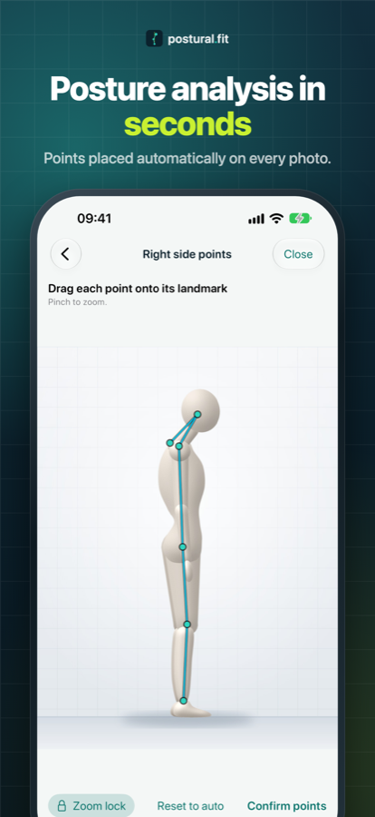

postural.fit
Posture assessment for physiotherapists and trainers, on iPhone and iPad.

What it does
- Photograph a client from the front, side and back with a level-guided camera.
- Landmarks are placed automatically; drag them to fine-tune.
- Read postural angles, goniometry and a pain diagram, with flagged findings.
- Share PDF reports and compare exams over time.
- Works in English, Portuguese, Spanish and French.
Private by design
No account, no servers, no tracking. Clients, photos and reports stay on your device. Privacy policy